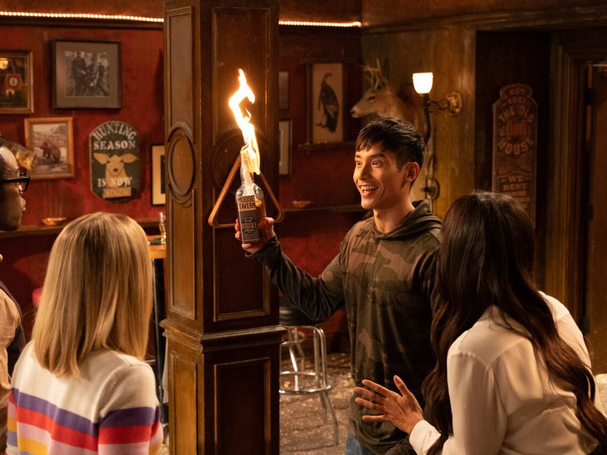
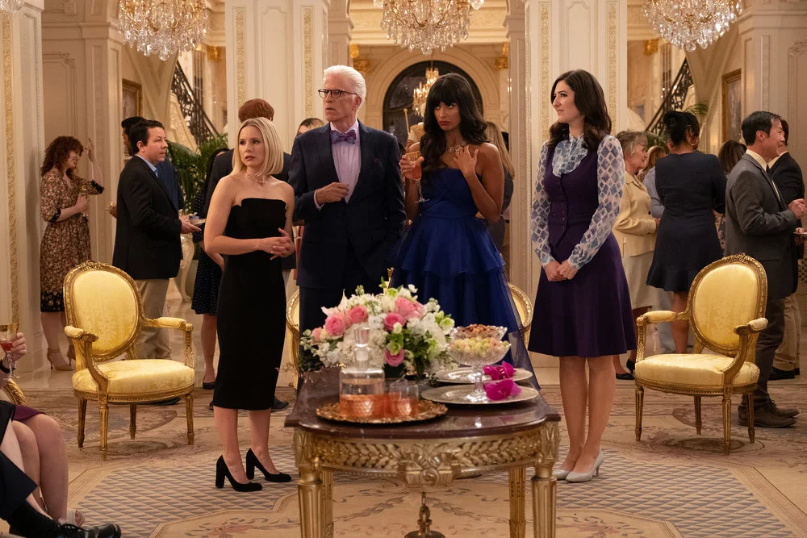
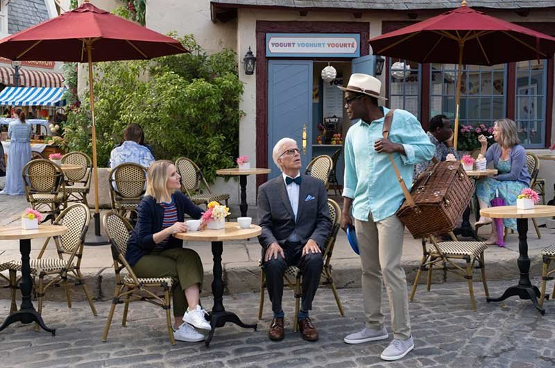

Plot
 Eleanor Shellstrop (Kristen Bell) discovers after death that she's been sent to "The Good Place," a wonderful, Heaven-like utopia designed by Michael (Ted Danson) as a reward for living a righteous life. Knowing that she has a morally imperfect past, she realizes a mistake must have been made, but not wanting to be sent to the Bad Place, she decides to try to hide her past, while trying to be a better person.
She's assigned a soulmate, Chidi Anagonye (William Jackson Harper), a philosopher who tries to help Eleanor. They meet small-time criminal Jason (Manny Jacinto), who's also apparently been sent to the wrong place, and his soulmate, wealthy socialite Tahani (Jameela Jamil).
The Good Place is a paradise with shops filled with treats, including a frozen yogurt shop that offers every color and flavor you can imagine. It also comes with an artificial intelligence guide named Janet (D'Arcy Carden), who can solve problems for the residents. However, they slowly realize that all is not as it appears to be.
About
 The series was commissioned by NBC based on a pitch by creator Mike Schur. Because of Schur's track record, he was given a 13-episode season, straight away without having to produce a pilot episode first.
The original announcement of the show gave little away, suggesting only that Kristen Bell's character would be a self-centred character, attempting to become a better person, and that Danson's character would be a mentor to her (which would turn out to be untrue).
There was no mention of the afterlife setting, in the original casting announcements, and even the cast themselves were only told the minimum about the series before signing up.
Schur later explained that the concept of "The Good Place," came from his own habit of assigning point scores, to people who annoyed him. Once he had come up with the idea of the twist ending, he had a start and end point for Season 1; which provided him with the series' structure. Only Bell and Danson were told about the twist ending of Season 1, at the outset.
The show is highly serialized, with strong story arcs and cliffhangers at the end of each episode. Schur had mentioned in interviews that he had a seven-season arc planned out—and according to Bell, Schur had told her how the series will end.
Despite being produced by NBC, The Good Place is marketed as a Netflix Original internationally, having different thumbnails and title card to match.
Location
 Most of the series was filmed at Universal Studios in Hollywood, with the village exteriors being mainly shot on the Little Europe backlot.
Many of the other locations, such as the Chinese Garden, were shot at The Huntington Collection & Botanical Gardens in San Marino, California. The beach scenes were filmed at Leo Carillo State Beach, in Malibu.